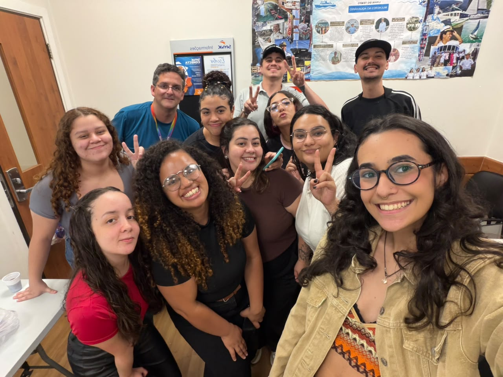
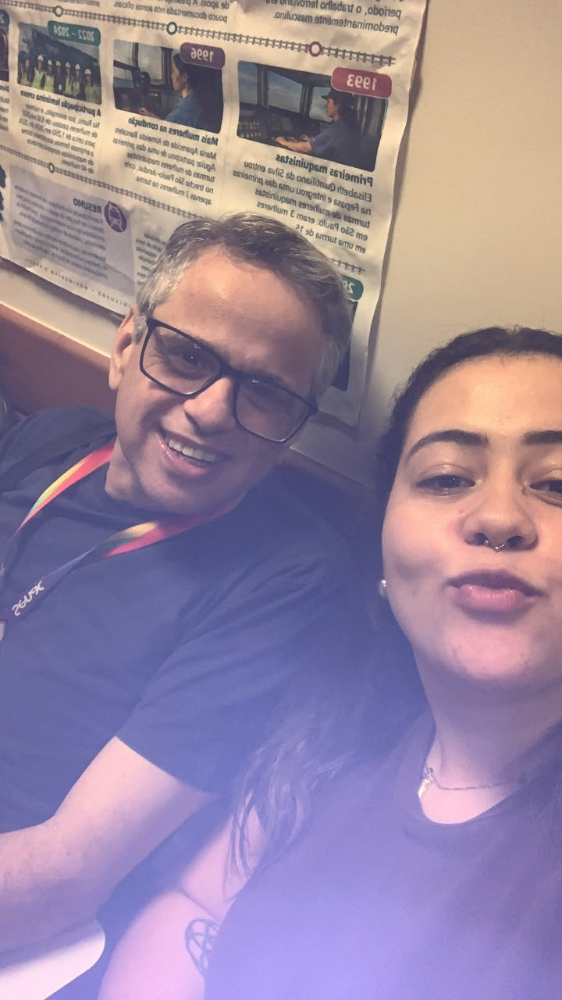
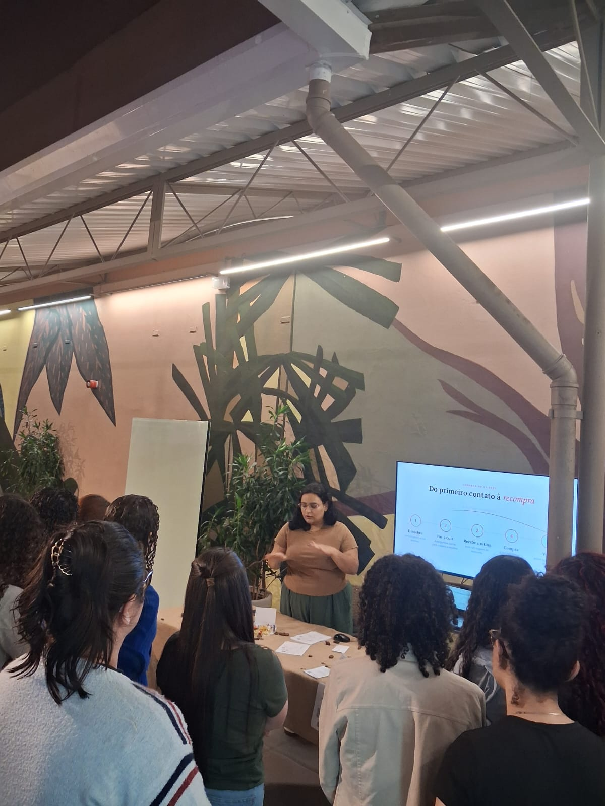
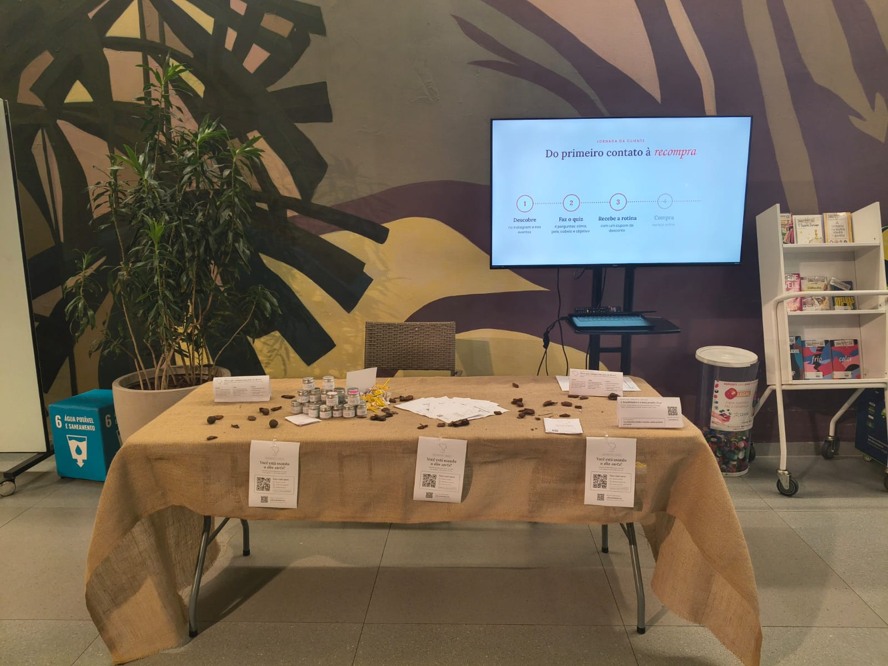

UMA LEITURA EXECUTIVA
Um relatório para consultar, apresentar e continuar evoluindo
Este ambiente reúne o portfólio das aplicações, registros das atividades, análise do processo, aprendizados e recomendações para futuras turmas.
01
Projetos
Seis soluções com screenshot, contexto e link de acesso.
02Processo
Da ferramenta pronta ao desenvolvimento sob demanda.
03Aprendizados
Letramento digital, multimídia e infraestrutura.
04Roadmap
Competências progressivas para o curso.
05Checklist
Ações interativas salvas no navegador.
06Conclusões
Síntese executiva e próximos passos.
REGISTROS LOCAIS
Abrir galeria Galeria de atividades
16 fotos e 1 vídeo organizados para consulta rápida.




CONTINUIDADE DOS ESTUDOS
Acessar material Material de fechamento dos estudantes
Revisão, consolidação e consulta posterior.